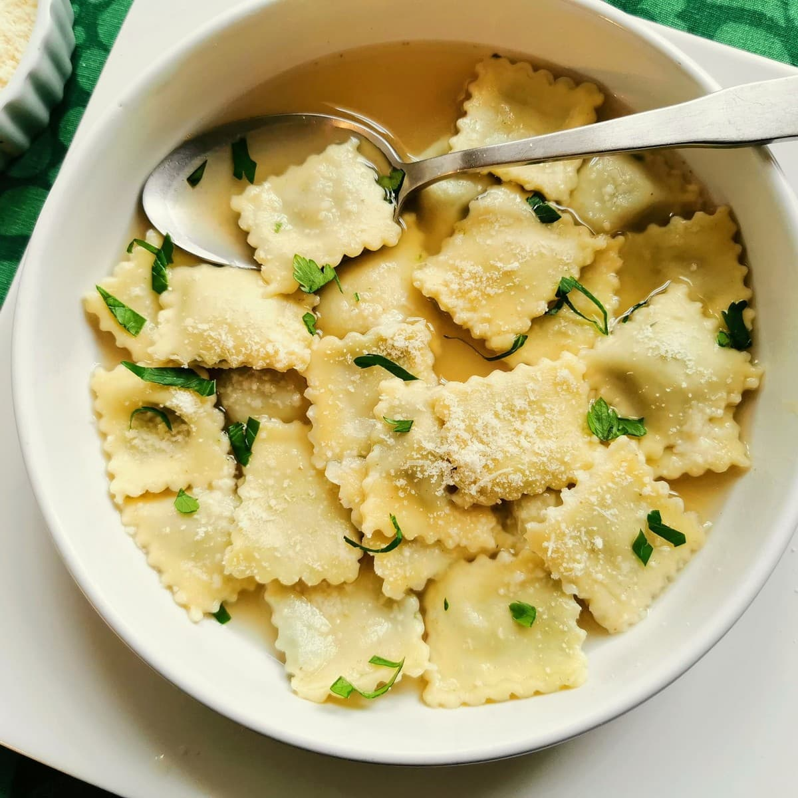

Ravioli

This ravioli will be a great meal to make if you invite a friend over, have a date, or just want to have some
comfort food at home.
It's quite simple and easy to make, and will leave you craving more.
- Spinach
- Ravioli
- Garlic Powder
- Mozzarella Cheese
- First, add the ravioli to a pot of boiling water
- Next, add salt to the water with ravioli, and drain it after
- Cook spinach in a separate pan and add to the ravioli
- Add garlic powder, and any other seasoning you may want
- Plate and serve!